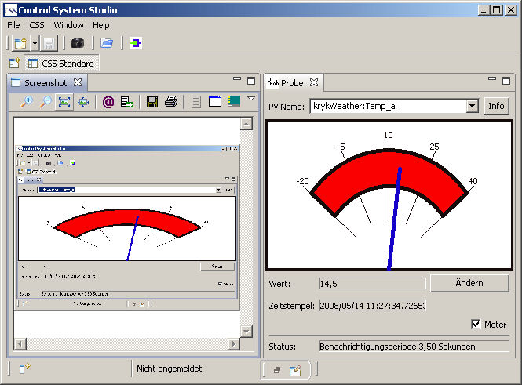

CSS Screenshot
Übersicht
Dieses Plugin stellt eine einfache Schnappschuß-Funktion zur Verfügung, um den CSS-Bildschirm oder einzelne Views
als Bild weiterzuverarbeiten.

Folgende Funktionen werden angeboten:
- Versenden des Bildes als e-Mail
- Abspeichern als JPEG oder BITMAP
- Ausdrucken (normal oder invertiert)
- Anpassen der Darstellung des Bildes an die View(ohne Veränderung der Bilddaten)
Geplante Funktionen sind:
- Ablegen des Bildes in die Zwischenablage des Betriebssystems
- Abrufen eines Bildes aus der Zwischenablage
- Schnappschuß von Fenstern außerhalb der CSS-Umgebung(auch sogenannten 'Detached Views')
Das Plugin definiert einen Extension Point, der es erlaubt beliebige Ziele für das Bild einzubinden, die jeweils in einem
eigenen Plugin implementiert sind.
Das Bild läßt sich in der darstellenden View vergrößern, verkleinern oder an die View anpassen, wobei diese Manipulationen sich
ausschließlich auf die Darstellung beschränken. Auf die Bilddaten haben sie keinen Einfluß.